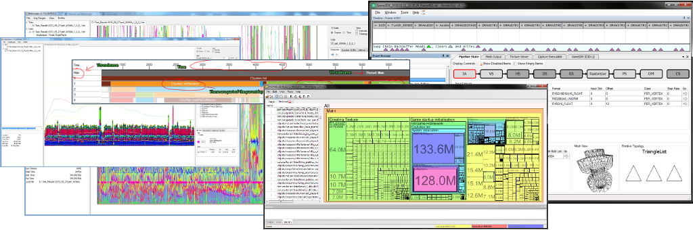

CRYENGINE ships with several complementary tools to assist the development process in tasks such as debugging or optimizing a game. Additionally there are 3rd party tools that are particularly well suited in combination with the engine.

Below you can find documentation with the purpose and usage of the auxiliary tools.